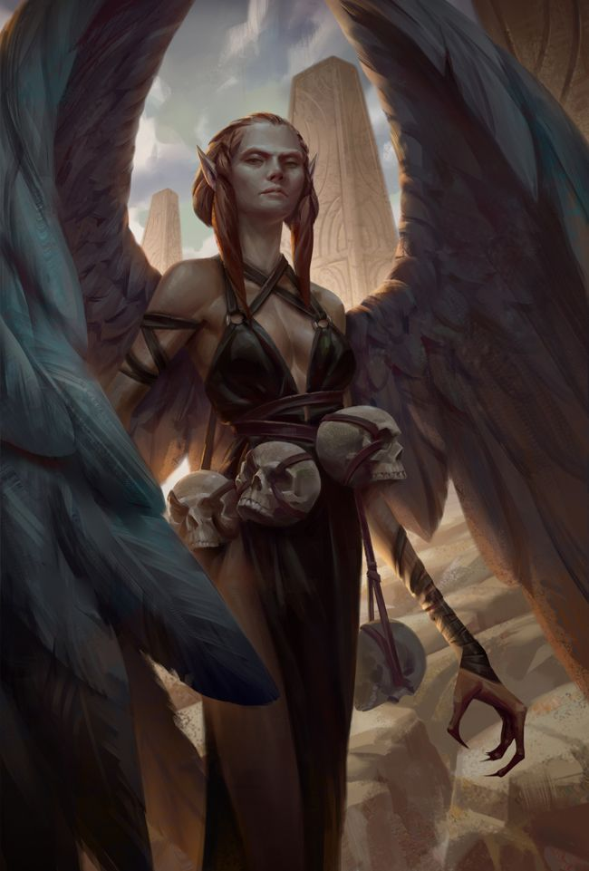
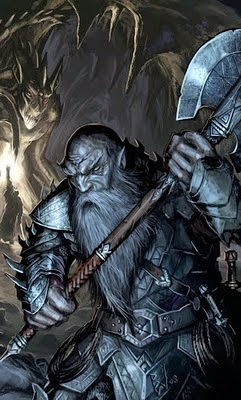
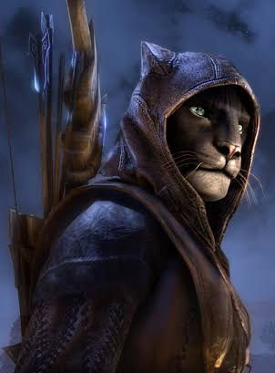
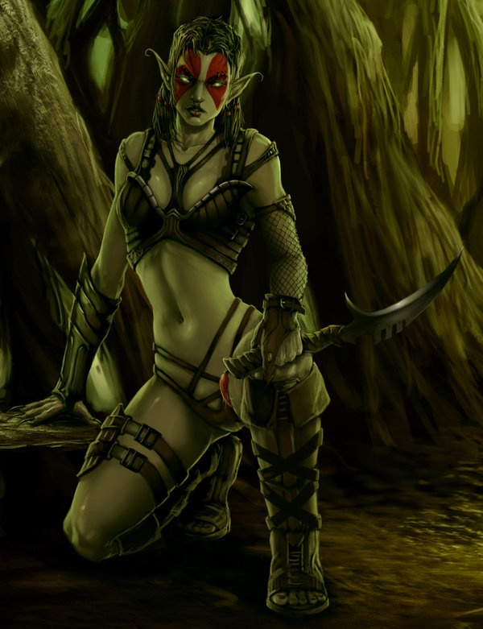
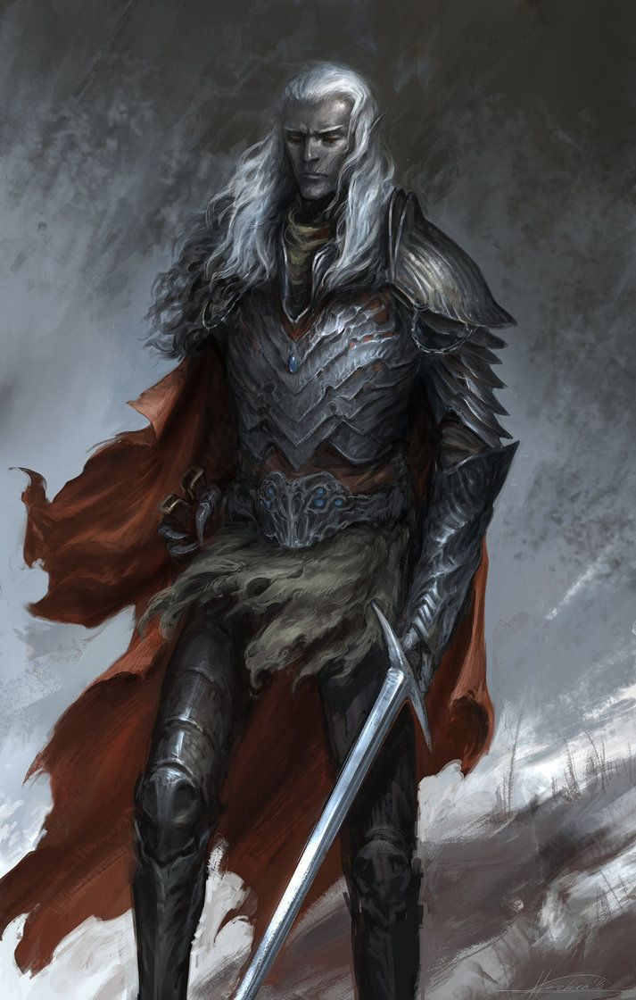
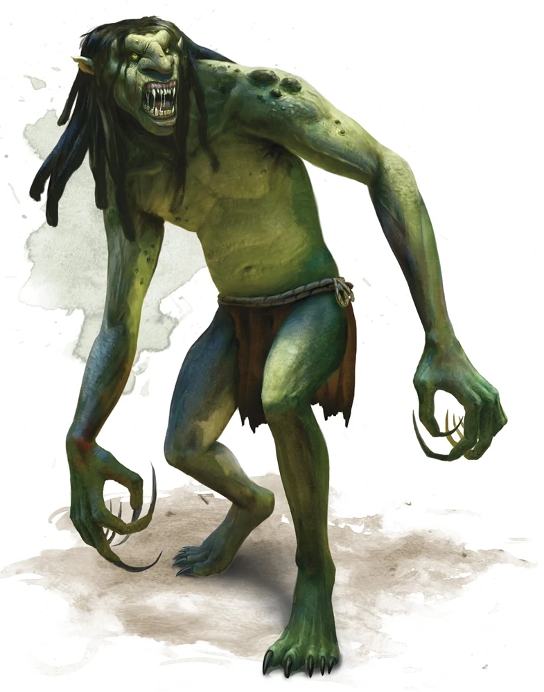
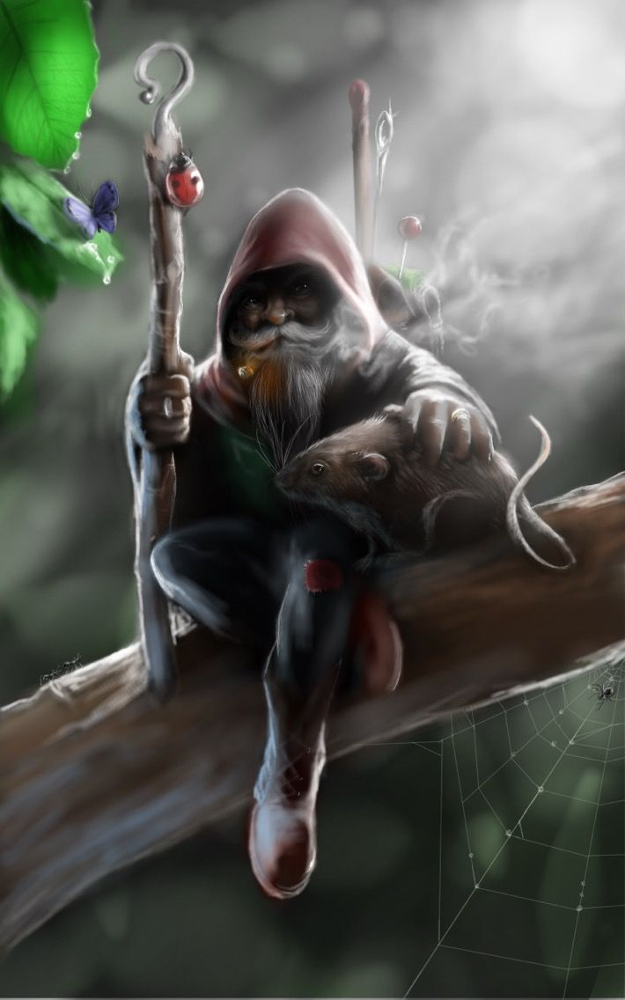
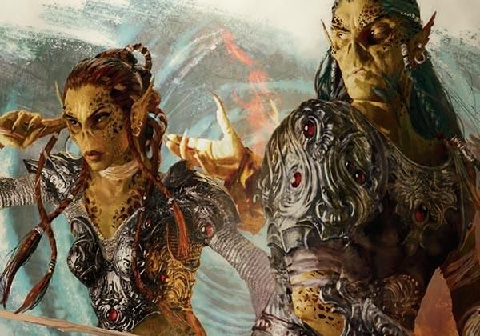

Uzak Diyarlar'da birçok ırk bulunmaktadır. Her bir ırkın kendine göre nitelik puanları ve yetenekleri kısacası artıları ve eksileri vardır. Aşağıda ırkların nitelik puanları listelenmektedir. Fakat şunu unutmayın, aşağıdaki puanlar seçilen sınıfa göre değişir. Hangi niteliğin ne miktarda değişeceğini de aşağıdaki tabloda bulabilirsiniz.

Uzak Diyarların en kalabalık ırkıdır. İnsan ırkını diğer ırklardan ayıran en önemli özellik her türlü ortama kolaylıkla uyum sağlayabilmeleridir. Bu nedenle bütün sınıflar için uygun olan tek ırktır. Ayrıca yönelim olarak da tahmin edilebilir bir ırk değildir. İçlerinde ezileni koruyan, merhameti bol olanı da vardır,şeytanı bile imrendirecek kadar zalim olanı da… Güç, zeka, bilgelik, çeviklik, bünye, karizma bakımından ortalama değerlere sahip bir ırktır.

Cüceler Uzak Diyarların kısa boylu ama güçlü, uzun sakallarıyla meşhur ırklarındandır. Pek zeki bir ırk olmasa da uzun yaşam süreleri, onların diyardaki bir çok ırka göre daha bilge bir ırk olmasını sağlamıştır. Çeviklik bakımından zayıf ve sessiz hareket etme konusunda başarız oldukları için bazı sınıflar için pek uygun değildirler. Fakat hemen hemen hepsi güçlü ve alt edilmesi zor savaşçılardır. Genel olarak mağaralarda ve dağlarda yaşamayı tercih ederler. Ama içlerinde şehirde yaşamayı ya da yaban hayatı sürmeyi tercih edenleri de vardır. Taş ve maden işçiliğinde oldukça maharetlidirler. Fakat yüzme konusunda da bir o kadar beceriksizdirler. Büyüye, zehire ve hastalıklara karşı dirençleri oldukça yüksektir. Yer altında yaşamaları ve değerli madenlere olan düşkünlükleri onları duergarlara karşı doğal bir düşman haline getirmiştir. Duergarlardan daha çok nefret ettikleri hiçbir varlık yoktur diyarda ve bazı söylentilere göre kadim lisanlarında duergarlarla ilgili yüze yakın hakaret ve küfür mevcuttur.

Uzak diyarların yarı hayvan yarı insan ırklarındandır. Sahip oldukları devasa tüylü kanatlar onlara doğuştan gelen bir uçma yetisi verir. Pençeye benzer el ve ayakları ise normalin üstünde, güçlü bir kavrayış sağlar. Kanat ve pençeler haricinde genel görünümleri insana benzer. Doğal meskenleri dağlardır. Yüksek ve yürüyerek ulaşılması mümkün olmayan yerlerde yaşamayı severler. Şehirlerden ve kalabalık ortamlardan mümkün olduğu kadar uzak dururlar. Ariallar sahip oldukları uçma yetisi nedeniyle kendilerini diyarın diğer ırklarından üstün görürler. Onlara göre yürüyen ve sürünen varlıklar acizdir. Kanatların yalnızca Tanrıya yakın olanlara verilen bir lütuf olduğu, ariallar arasında genel bir kabuldür. Sürünenlerin ise en aşağılık varlıklar olduğunu düşünürler. Bu nedenle yılanlardan nefret ederler.

Uzak Diyarların yer altında yaşayan tıknaz, güçlü, ırklarındandır. Cücelerin yer altının derinliklerinde kaybolmuş uzak akrabalarıdır. Kem yönelimli, düzen karşıtı yaratıklardır. Kaos ortamından ve kendi ırkları dahil bütün varlıklara acı çektirmekten haz alırlar. Yeraltının en karanlık, güneş görmemiş dehlizlerinde yaşarlar. Değerli madenlere fazlasıyla ilgi duyarlar. Bu madenlere kendileri gibi ilgi duyan cüce ırkının doğal düşmanıdır. Bir duergarın saygısı ancak onunla savaşarak kazanılabilir çünkü savaşmayan kişi kölesi olmayı kabul etmiş sayılır. Duergarların dostluğu riskli, düşmanlığı ise mutlaka ölümcüldür.

Uzak Diyarların yarı insan yarı hayvan ırklarındandır. Baş kısımları kedigil ailesinin farklı mensuplarına benzer. Kedi, aslan, kaplan, jaguar, panter, vaşak, çita görünümünde olanları vardır. Vücutları bir insanı andırsa da kürkle kaplıdır. Kürklerinin rengi hangi kedi türüne benzediklerine göre değişir. Sahip oldukları pençeler, onları, çıplak elle dövüşte diğer ırklara göre üstün kılar. Ayrıca çok çevik ve sessiz hareket ederler. Doğuştan gece görüş yeteneğine ve çok keskin kulaklara sahiptirler. Bu özellikler onların bazı sınıflara olan yatkınlığını arttırır. Şehir ortamında, doğuştan gelen özellikleri onları, hırsızlık için aranılan kişiler haline getirmiştir. Tabi bu durum halkın geneli tarafından ön yargıyla karşılanmalarına sebep olmuştur. Hatta diyarda bazı hanlar felarları kabul etmez, bazı dükkanlar mal satmaz olmuşlardır. Bu da onları doğal ortamları olan ormanlara itmiştir. Kendilerine ait köylerde, insanlara ait şehirlerden bağımsız yaşamaya çalışırlar. Felarların diğer ırklarda olmayan ve bütün mensupları tarafından çok ciddiye alınan bir kardeşlik anlayışları vardır. Bazı söylentilere göre tüm felarların dahil olduğu ve kardeşliğin her şeyden önce geldiği gizli bir topluluk mevcuttur. Ama bu topluluğun toplanma yerleri ve hiyerarşik düzenine ait hiçbir bilgi mevcut değildir.

Uzak Diyarların az bilinen varlıklarındandır. Niyetleri önceden kestirilemez. İçlerinde merhamet dolu olanları da vardır, diyara korku salanları da… Sessiz hareket kabiliyetleri ve çeviklikleri sayesinde çoğu zaman fark edilmezler. Ormanlar, su kenarları gibi şehrin kalabalığından uzak doğanın sınırında yerlerde yaşamayı severler. Ama içlerinde nüfusun çoğunlukta olduğu şehirlerde yaşamayı tercih edenleri de vardır.

Koyu tenleri ve beyaz saçları dışında bir çok yönden uzak akrabaları elflere benzerler. Elfler gibi çevik, ince yapılı ve zeki bir ırktır. Genel olarak kem yanlısı olan bu ırkın iyi yönelimli bireylerine denk gelmek mümkündür ve tüm diyarda bu ırkın nüfusunun en yoğun olduğu yer Karanlıkaltı’dır. Karanlık ve yer altındaki mekanları daha çok tercih etseler de, yeryüzünde yaşamını idame ettirenler de görülmüştür. Toplum olarak çok sıkı bir hiyerarşik yapıya sahip olan bu ırkın dişi bireyleri genel olarak daha zeki ve yönetimde söz sahibidir, büyüye yatkınlıkları daha fazladır.

Diyarın en çirkin ırkıdır. Yeşil ten rengi, biçimsiz yüzleri, düşük zeka seviyeleri ile diğer ırklardan kolaylıkla ayırt edilirler. Bu eksikliklerini ise diyarda hiçbir ırkta bulunmayan güçleriyle telafi ederler. Çevik olmasalar da güç bakımından bir trolle baş edebilecek çok az ırk vardır. Zihni etkileyen büyülere ve ateşe karşı ise oldukça dayanıksızdırlar. Boyları diğer ırklara göre daha uzundur. Kolları da aynı şekilde vücutlarına göre orantısız derece de uzundur. Genelde şehir ortamından uzak mağaralarda yaşamayı, gözden uzak olmayı tercih ederler. Fakat içlerinde şehir hayatına uyum sağlamış sosyal bireyleri de görmek mümkündür.

Diyarın kısa boylu insansı ırklarındandır. Değişik espri anlayışları, mühendislik yetenekleri ve yüksek zekası ile öne çıkan meraklı bir ırktır. Önüne geçemedikleri merak duygusu ve maceracı ruhları, onların tüm diyara yayılmasına sebep olmuştur. Yüksek zekaları nedeniyle büyüye yatkınlıkları fazladır. Araştırmacı bir ruha sahip oldukları için diyarın en iyi büyücüleri genelde bu ırka mensup olanlardan çıkar. Değerli taşlara karşı dayanılmaz bir sevgi beslerler. Bir nevi onların zayıf yanlarıdır. Özellikle yakutlar, favori taşları arasında önde gelir. Genellikle yer altında yaşamayı tercih ederler. Bazen iri hayvanların terk ettikleri ufak mağaraları ev olarak kullanırlar. Her ne kadar mağaralarda yaşasalarda yüzeye yakın olmayı severler. Cüceler, duergarlar, kara elfler gibi yeraltının derinliklerini tercih etmezler.

İnce yapılı, uzun boylu insansı ırklardandır. Sarı tenleri, parlak siyah gözleri, keskin hatlara sahip yüzleri ve sivri kulakları diyarın diğer ırklarından ayırt edilen özellikleridir. Uzun yıllar zihin avcıları tarafından tutsak edilmelerinin bir armağanı olarak bazı psişik güçlere sahiptirler. Zihni etkileyen büyülere karşı oldukça dayanıklıdırlar. Esaret altında geçen uzun yıllar nedeniyle zalim, kibirli ve agresif bir kişiliğe sahiptirler. Zeki ve çevik bir ırk olmaları sebebiyle büyücü sınıflarına yatkın bir ırktır. Benzeri olmayan hafızalarıyla tanınırlar.